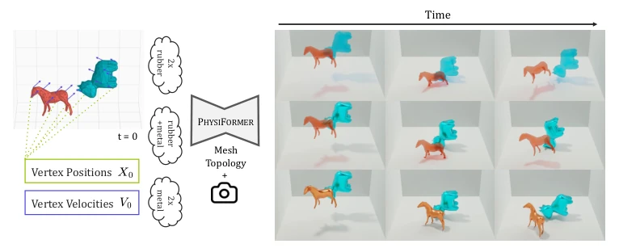
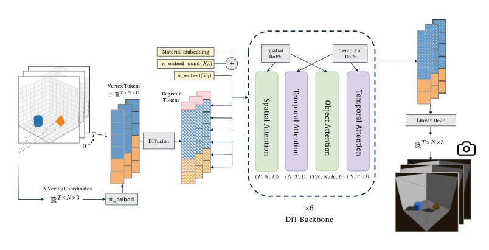
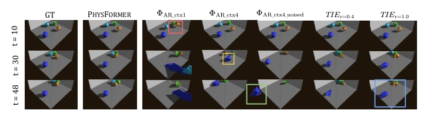
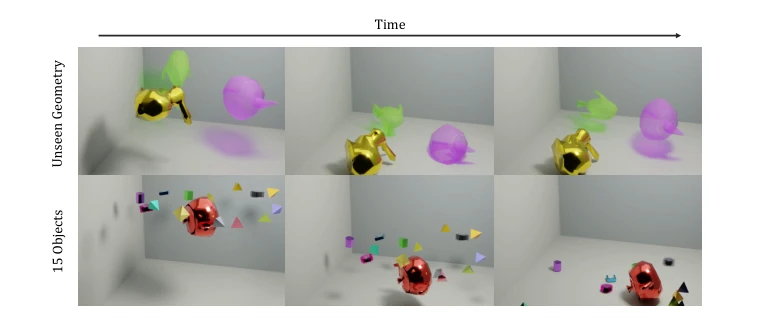
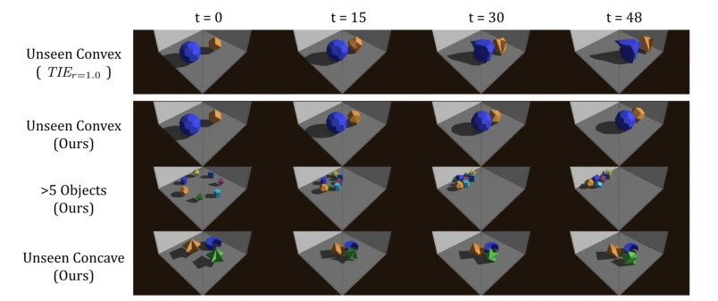
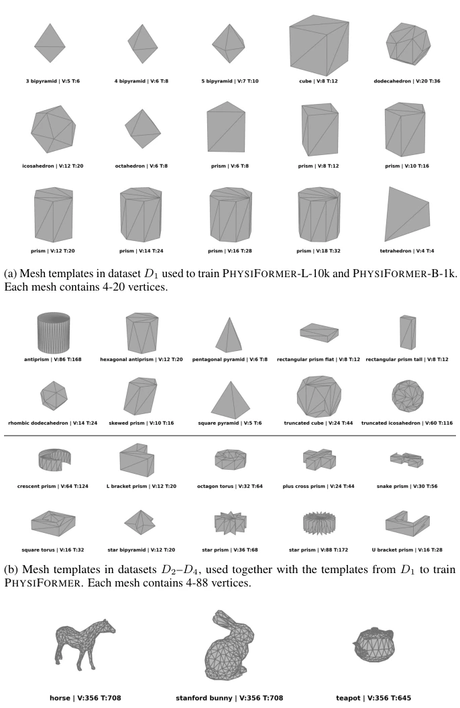
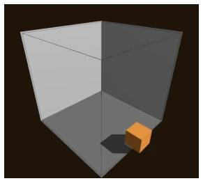
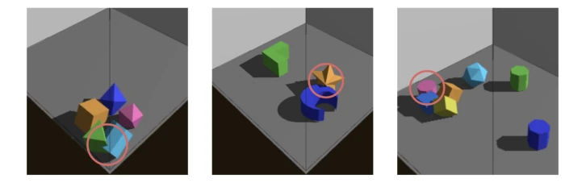

PhysiFormer attempts to use diffusion models to directly "compute" physics, rather than "guessing" pixels like video generation, which is a quite refreshing approach. Its biggest selling point is predicting trajectories in one step, avoiding the error accumulation of autoregressive (AR) models where "one mistake leads to all mistakes", and rigid body preservation is indeed much better. However, do not get too excited, it still relies on data from the Genesis simulator [4], and real-world friction and contact noise are not yet fully understood. Although claimed to not need physical constraints, occasional penetration and pseudo-contact indicate that pure data-driven methods still fall short on physical hard constraints. For robots, this "world coordinate" modeling is more reliable than pixel space, but inference cost and fixed length limit real-time performance. Overall, it is a beautiful geometric-level world model prototype, but still lacks the final touch compared to a true physical brain, especially when generalizing to complex real-world scenarios.
Existing video world models (VDMs) can generate realistic images, but pixel space mixes viewpoints and lighting, leading to poor physical consistency [11, 44]. Autoregressive (AR) methods, while conforming to mechanical intuition, suffer from severe error accumulation in long-sequence prediction, leading to object deformation or drift [50, 48, 35, 65]. Traditional physics simulators such as MuJoCo [54] and PyBullet [17] have high accuracy but are computationally expensive and difficult to generalize. Learning-based methods such as MeshGraphNets [46] or HopNet [57] often rely on explicit topological preprocessing or geometric inductive biases, limiting generalizability. PhysiFormer aims to solve these problems by performing diffusion modeling directly in 3D world coordinate space, without autoencoders or explicit object encoding, attempting to capture dynamic uncertainty and avoid AR's exposure bias, providing more reliable physical priors for embodied intelligence.
The overall process adopts a Flow Matching diffusion framework, with inputs as initial vertex positions X0, velocities V0, and material properties (rigid/elastic), directly predicting vertex trajectories X for future T steps. The model is built based on Diffusion Transformer (DiT) [45], with the core innovation lying in the decomposition of the attention mechanism. First, the vertex sequence is flattened into Tokens and projected through a linear layer. Second, factorized attention is adopted: temporal attention focuses on single vertex sequences, spatial attention is divided into global and object-level, object-level attention groups different objects through Padding to achieve permutation invariance without explicit IDs. Positional encoding uses RoPE [53], processed separately for space and time; spatial RoPE is based on coordinate offsets, specifically multiplying xyz by log-spaced frequencies to generate phases. During training, a JiT [33] style x-prediction objective is adopted, minimizing velocity prediction error. During inference, trajectories are obtained by gradually denoising from noise via an ODE solver (Heun). This design avoids AR's iterative errors and aggregates scene context through global Register Tokens, achieving efficient multi-object inference. Additionally, the model supports mixed material inputs, embedding material types through MLP, requiring no additional geometric preprocessing, making the inference process more flexible and general.

Figure 1: PHYSIFORMER overview. Given initial per-vertex positions X0 ∈RN×3 and velocities V0 ∈RN×3, and material conditions of (1) rigid, (2) deformable, or (3) mixed, PHYSIFORMER predicts full-sequence future vertex trajectories in a single forward pass, producing physically plausible multi-object dynamics, with mesh topology imposed at inference time. Output can be rendered as 4D mesh motion under arbitrary conditions.

Figure 2: PHYSIFORMER Architecture. During training, input mesh vertex coordinates in RT ×N×3 are projected into hidden dimension D = 1024 via a linear embedder x_embed, and diffused with noise according to the flow-matching schedule. Each noised vertex token is additively conditioned on first-frame position and velocity embeddings (via separate x_embed_cond and v_embed) and a material embedding. We use 16 prepended global register tokens to aggregate context across the factorized DiT-L backbone with 4 × 6 layers. The tokens are replicated and consolidated over time, vertices, and objects for spatial, temporal, and object-level attention, respectively, each using its corresponding RoPE. At inference, iterative denoising produces clean vertex trajectories, which are projected back to coordi
实验Experiments
使用 Genesis 仿真器 [4] 生成 10 万 + 轨迹数据，涵盖刚性、弹性及混合材料场景。对比基线包括自回归 Transformer (ΦAR) 和 TIE [50]。评测指标包含轨迹 MSE、刚性损失及动量漂移率。结果显示，PhysiFormer 在长序列预测中显著优于 AR 基线，有效避免了物体形变和漂移（图 3）。在未见几何形状、更多物体数量及混合材料设置下均表现良好（图 4）。消融实验表明，因子化对象注意力比显式 ID 嵌入泛化性更好，且噪声尺度 0.1 对坐标信号至关重要。尽管存在少量穿透伪影，但整体物理一致性远超传统 AR 方法，证明了坐标空间扩散在物理模拟中的潜力。
Genesis simulator [4] is used to generate 100k+ trajectory data, covering rigid, elastic, and mixed material scenarios. Comparison baselines include Autoregressive Transformer (ΦAR) and TIE [50]. Evaluation metrics include trajectory MSE, rigidity loss, and momentum drift rate. Results show that PhysiFormer significantly outperforms AR baselines in long-sequence prediction, effectively avoiding object deformation and drift (Fig. 3). It performs well under unseen geometric shapes, larger object counts, and mixed material settings (Fig. 4). Ablation studies show that factorized object attention has better generalization than explicit ID embedding, and noise scale 0.1 is crucial for coordinate signals. Although there are some penetration artifacts, overall physical consistency far exceeds traditional AR methods, demonstrating the potential of coordinate space diffusion in physical simulation.

Figure 3: Qualitative comparison of PHYSIFORMER against autoregressive baselines on trained 10k rigid object data. At t = 10, rigidity is not preserved in ΦAR_ctx1, but objects remain rigid across all other models. As t increases, all autoregressive baselines diverge due to error ac- cumulation: stationary objects fail to remain at rest, objects escape the implicit bounding box, and object shapes deform severely, even in the strongest AR baseline TIE r=1.0. PHYSIFORMER consis- tently maintains object rigidity and produces physically plausible long-horizon motion.

Figure 4: PHYSIFORMER generalizes to complex real-world object geometries and object counts not seen during training. Top: Inference on 2 deformable objects (fish and teapot) plus 1 rigid bunny, each with 100 vertices per object. Deformation is most visible for the middle-frame purple teapot. PHYSIFORMER allows mixed-material inference although training only saw uniform material across all objects per scene. Bottom: Inference on 15 rigid objects although training saw at most 10. Extension to more objects is direct owing to object-level attention, which implicitly encodes object identity in the architecture design.
其他图片Other Figures

Figure 5: PHYSIFORMER-L-10k generalizes to object geometries and counts not seen during training, shown at t = 0, 15, 30, 48. The first row shows the best AR model (TIEr=1.0) on two unseen convex objects. For the following rows, we have top: two unseen convex objects, middle: seven objects from seen convex templates, exceeding the training maximum of five, bottom: three objects with unseen concave geometry. PHYSIFORMER-L-10k produces physically plausible rigid- body dynamics across all settings, demonstrating robustness to topology, vertex count, and scene complexity beyond the training distribution.

Figure 6: Mesh templates and real-world geometries used for dataset generation and out-of- distribution inference.

Figure 7: Physics simulator failure cases occur when boundary contacts are imperfectly resolved, allowing objects to escape the bounding box, especially at high velocities or with fewer simulation substeps.

Figure 8: Examples of object overlap during inference